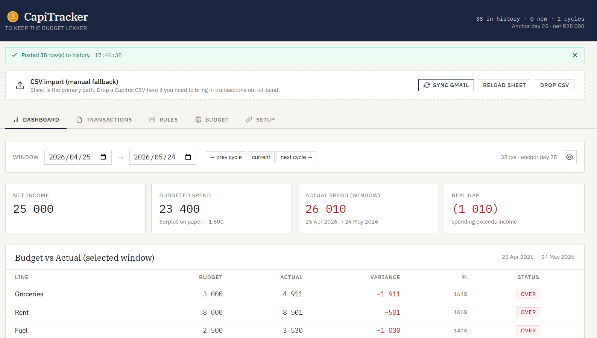

To Keep the Budget Lekker
A Sheet-backed budget tracker for South African bank statements. Built around pay-cycle windows (25th → 25th by default), not calendar months — so what you see actually matches how you spend.
